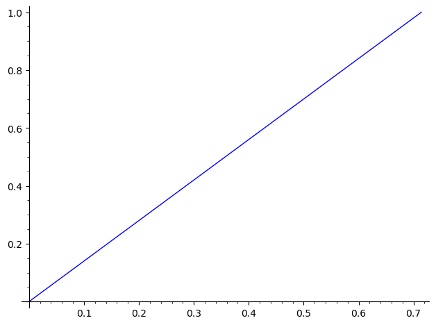
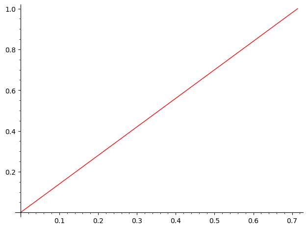

straight_line_trajectory#
- class flatsurf.geometry.straight_line_trajectory.AbstractStraightLineTrajectory[source]#
- coding(alphabet=None)[source]#
Return the coding of this trajectory with respect to the sides of the polygons
INPUT:
alphabet– an optional dictionary(lab,nb) -> letter. If some labels are avoided then these crossings are ignored.
EXAMPLES:
sage: from flatsurf import translation_surfaces sage: t = translation_surfaces.square_torus() sage: v = t.tangent_vector(0, (1/2,0), (5,6)) sage: l = v.straight_line_trajectory() sage: alphabet = {(0,0): 'a', (0,1): 'b', (0,2):'a', (0,3): 'b'} sage: l.coding() [(0, 0), (0, 1)] sage: l.coding(alphabet) ['a', 'b'] sage: l.flow(10); l.flow(-10) sage: l.coding() [(0, 2), (0, 1), (0, 2), (0, 1), (0, 2), (0, 1), (0, 2), (0, 1), (0, 2)] sage: print(''.join(l.coding(alphabet))) ababababa sage: v = t.tangent_vector(0, (1/2,0), (7,13)) sage: l = v.straight_line_trajectory() sage: l.flow(10); l.flow(-10) sage: print(''.join(l.coding(alphabet))) aabaabaababaabaabaab
For a closed trajectory, the last label (corresponding also to the starting point) is not considered:
sage: v = t.tangent_vector(0, (1/5,1/7), (1,1)) sage: l = v.straight_line_trajectory() sage: l.flow(10) sage: l.is_closed() True sage: l.coding(alphabet) ['a', 'b']
Check that the saddle connections that are obtained in the torus get the expected coding:
sage: for _ in range(10): # long time (.6s) ....: x = ZZ.random_element(1,30) ....: y = ZZ.random_element(1,30) ....: x,y = x/gcd(x,y), y/gcd(x,y) ....: v = t.tangent_vector(0, (0,0), (x,y)) ....: l = v.straight_line_trajectory() ....: l.flow(200); l.flow(-200) ....: w = ''.join(l.coding(alphabet)) ....: assert Word(w+'ab'+w).is_balanced() ....: assert Word(w+'ba'+w).is_balanced() ....: assert w.count('a') == y-1 ....: assert w.count('b') == x-1
- cylinder()[source]#
If this is a closed orbit, return the associated maximal cylinder. Raises a ValueError if this trajectory is not closed.
EXAMPLES:
sage: from flatsurf import translation_surfaces sage: s = translation_surfaces.regular_octagon() sage: v = s.tangent_vector(0,(1/2,0),(sqrt(2),1)) sage: traj = v.straight_line_trajectory() sage: traj.flow(4) sage: traj.is_closed() True sage: cyl = traj.cylinder() sage: cyl.area() # a = sqrt(2) a + 1 sage: cyl.holonomy() (3*a + 4, 2*a + 3) sage: cyl.edges() (2, 3, 3, 2, 4)
- graphical_trajectory(graphical_surface=None, **options)[source]#
Returns a
GraphicalStraightLineTrajectorycorresponding to this trajectory in the providedGraphicalSurface.
- intersections(traj, count_singularities=False, include_segments=False)[source]#
Return the set of SurfacePoints representing the intersections of this trajectory with the provided trajectory or SaddleConnection.
Singularities will be included only if count_singularities is set to True.
If include_segments is True, it iterates over triples consisting of the SurfacePoint, and two sets. The first set consists of segments of this trajectory that contain the point and the second set consists of segments of traj that contain the point.
EXAMPLES:
sage: from flatsurf import translation_surfaces sage: s = translation_surfaces.square_torus() sage: traj1 = s.tangent_vector(0,(1/2,0),(1,1)).straight_line_trajectory() sage: traj1.flow(3) sage: traj1.is_closed() True sage: traj2 = s.tangent_vector(0,(1/2,0),(-1,1)).straight_line_trajectory() sage: traj2.flow(3) sage: traj2.is_closed() True sage: sum(1 for _ in traj1.intersections(traj2)) 2 sage: for p, (segs1, segs2) in traj1.intersections(traj2, include_segments=True): ....: print(p) ....: print(len(segs1), len(segs2)) Point (1/2, 0) of polygon 0 2 2 Point (0, 1/2) of polygon 0 2 2
- intersects(traj, count_singularities=False)[source]#
Return true if this trajectory intersects the other trajectory.
- plot(*args, **options)[source]#
Plot this trajectory by converting to a graphical trajectory.
If any arguments are provided in *args it must be only one argument containing a GraphicalSurface. The keyword arguments in **options are passed on to
flatsurf.graphical.straight_line_trajectory.GraphicalStraightLineTrajectory.plot().EXAMPLES:
sage: from flatsurf import translation_surfaces sage: T = translation_surfaces.square_torus() sage: v = T.tangent_vector(0, (0,0), (5,7)) sage: L = v.straight_line_trajectory() sage: L.plot() ...Graphics object consisting of 1 graphics primitive
sage: L.plot(color='red') ...Graphics object consisting of 1 graphics primitive

- class flatsurf.geometry.straight_line_trajectory.SegmentInPolygon(start, end=None)[source]#
Maximal segment in a polygon of a similarity surface
EXAMPLES:
sage: from flatsurf import similarity_surfaces sage: from flatsurf.geometry.straight_line_trajectory import SegmentInPolygon sage: s = similarity_surfaces.example() sage: v = s.tangent_vector(0, (1/3,-1/4), (0,1)) sage: SegmentInPolygon(v) Segment in polygon 0 starting at (1/3, -1/3) and ending at (1/3, 0)
- next()[source]#
Return the next segment obtained by continuing straight through the end point.
EXAMPLES:
sage: from flatsurf import similarity_surfaces sage: from flatsurf.geometry.straight_line_trajectory import SegmentInPolygon sage: s = similarity_surfaces.example() sage: s.polygon(0) Polygon(vertices=[(0, 0), (2, -2), (2, 0)]) sage: s.polygon(1) Polygon(vertices=[(0, 0), (2, 0), (1, 3)]) sage: v = s.tangent_vector(0, (0,0), (3,-1)) sage: seg = SegmentInPolygon(v) sage: seg Segment in polygon 0 starting at (0, 0) and ending at (2, -2/3) sage: seg.next() Segment in polygon 1 starting at (2/3, 2) and ending at (14/9, 4/3)
- class flatsurf.geometry.straight_line_trajectory.StraightLineTrajectory(tangent_vector)[source]#
Straight-line trajectory in a similarity surface.
EXAMPLES:
# Demonstrate the handling of edges sage: from flatsurf import translation_surfaces sage: from flatsurf.geometry.straight_line_trajectory import StraightLineTrajectory sage: p = SymmetricGroup(2)('(1,2)') sage: s = translation_surfaces.origami(p,p) sage: traj = StraightLineTrajectory(s.tangent_vector(1,(0,0),(1,0))) sage: traj Straight line trajectory made of 1 segments from (0, 0) in polygon 1 to (1, 1) in polygon 2 sage: traj.is_saddle_connection() True sage: traj2 = StraightLineTrajectory(s.tangent_vector(1,(0,0),(0,1))) sage: traj2 Straight line trajectory made of 1 segments from (1, 0) in polygon 2 to (0, 1) in polygon 1 sage: traj2.is_saddle_connection() True
- flow(steps)[source]#
Append or prepend segments to the trajectory. If steps is positive, attempt to append this many segments. If steps is negative, attempt to prepend this many segments. Will fail gracefully the trajectory hits a singularity or closes up.
EXAMPLES:
sage: from flatsurf import similarity_surfaces sage: s = similarity_surfaces.example() sage: v = s.tangent_vector(0, (1,-1/2), (3,-1)) sage: traj = v.straight_line_trajectory() sage: traj Straight line trajectory made of 1 segments from (1/4, -1/4) in polygon 0 to (2, -5/6) in polygon 0 sage: traj.flow(1) sage: traj Straight line trajectory made of 2 segments from (1/4, -1/4) in polygon 0 to (61/36, 11/12) in polygon 1 sage: traj.flow(-1) sage: traj Straight line trajectory made of 3 segments from (15/16, 45/16) in polygon 1 to (61/36, 11/12) in polygon 1
- is_closed()[source]#
Test whether this is a closed trajectory.
By convention, by a closed trajectory we mean a trajectory without any singularities.
See also
EXAMPLES:
An example in a cone surface covered by the torus:
sage: from flatsurf import MutableOrientedSimilaritySurface, polygons sage: p = polygons.square() sage: s = MutableOrientedSimilaritySurface(p.base_ring()) sage: s.add_polygon(p) 0 sage: s.glue((0, 0), (0, 3)) sage: s.glue((0, 1), (0, 2)) sage: s.set_immutable() sage: t = s sage: v = t.tangent_vector(0, (1/2,0), (1/3,7/5)) sage: l = v.straight_line_trajectory() sage: l.is_closed() False sage: l.flow(100) sage: l.is_closed() True sage: v = t.tangent_vector(0, (1/2,0), (1/3,2/5)) sage: l = v.straight_line_trajectory() sage: l.flow(100) sage: l.is_closed() False sage: l.is_saddle_connection() False sage: l.flow(-100) sage: l.is_saddle_connection() True
- segment(i)[source]#
EXAMPLES:
sage: from flatsurf import translation_surfaces sage: O = translation_surfaces.regular_octagon() sage: v = O.tangent_vector(0, (1,1), (33,45)) sage: L = v.straight_line_trajectory() sage: L.segment(0) Segment in polygon 0 starting at (4/15, 0) and ending at (11/26*a + 1, 15/26*a + 1) sage: L.flow(-1) sage: L.segment(0) Segment in polygon 0 starting at (-1/2*a, 7/22*a + 7/11) and ending at (4/15, a + 1) sage: L.flow(1) sage: L.segment(2) Segment in polygon 0 starting at (-1/13*a, 1/13*a) and ending at (9/26*a + 11/13, 17/26*a + 15/13)
- class flatsurf.geometry.straight_line_trajectory.StraightLineTrajectoryTranslation(tangent_vector)[source]#
Straight line trajectory in a translation surface.
This is similar to
StraightLineTrajectorybut implemented using interval exchange maps. It should be faster than the implementation via segments and flowing in polygons.This class only stores a list of triples
(p, e, x)where:pis a label of a polygoneis the number of some edge inpxis the position of the point ine(be careful that it is not necessarily a number between 0 and 1. It is given relatively to the length of the induced interval in the iet)
- is_saddle_connection()[source]#
EXAMPLES:
sage: from flatsurf import translation_surfaces sage: from flatsurf.geometry.straight_line_trajectory import StraightLineTrajectoryTranslation sage: torus = translation_surfaces.square_torus() sage: v = torus.tangent_vector(0, (1/2,1/2), (1,1)) sage: S = StraightLineTrajectoryTranslation(v) sage: S.is_saddle_connection() True sage: v = torus.tangent_vector(0, (1/3,2/3), (1,2)) sage: S = StraightLineTrajectoryTranslation(v) sage: S.is_saddle_connection() False sage: S.flow(1) sage: S.is_saddle_connection() True
- segment(i)[source]#
EXAMPLES:
sage: from flatsurf import translation_surfaces sage: from flatsurf.geometry.straight_line_trajectory import StraightLineTrajectoryTranslation sage: O = translation_surfaces.regular_octagon() sage: v = O.tangent_vector(0, (1,1), (33,45)) sage: L = StraightLineTrajectoryTranslation(v) sage: L.segment(0) Segment in polygon 0 starting at (4/15, 0) and ending at (11/26*a + 1, 15/26*a + 1) sage: L.flow(-1) sage: L.segment(0) Segment in polygon 0 starting at (-1/2*a, 7/22*a + 7/11) and ending at (4/15, a + 1) sage: L.flow(1) sage: L.segment(2) Segment in polygon 0 starting at (-1/13*a, 1/13*a) and ending at (9/26*a + 11/13, 17/26*a + 15/13)
- segments()[source]#
EXAMPLES:
sage: from flatsurf import translation_surfaces sage: from flatsurf.geometry.straight_line_trajectory import StraightLineTrajectoryTranslation sage: s = translation_surfaces.square_torus().change_ring(AA) sage: v = s.tangent_vector(0, (0,0), (1,1+AA(5).sqrt())) sage: L = StraightLineTrajectoryTranslation(v) sage: L.flow(2) sage: L.segments() [Segment in polygon 0 starting at (0, 0) and ending at (0.3090169943749474?, 1), Segment in polygon 0 starting at (0.3090169943749474?, 0) and ending at (0.618033988749895?, 1), Segment in polygon 0 starting at (0.618033988749895?, 0) and ending at (0.9270509831248423?, 1)]
- flatsurf.geometry.straight_line_trajectory.get_linearity_coeff(u, v)[source]#
Given the two 2-dimensional vectors
uandv, returnaso thatv = a*uIf the vectors are not colinear, a
ValueErroris raised.EXAMPLES:
sage: from flatsurf.geometry.straight_line_trajectory import get_linearity_coeff sage: V = VectorSpace(QQ,2) sage: get_linearity_coeff(V((1,0)), V((2,0))) 2 sage: get_linearity_coeff(V((2,0)), V((1,0))) 1/2 sage: get_linearity_coeff(V((0,1)), V((0,2))) 2 sage: get_linearity_coeff(V((0,2)), V((0,1))) 1/2 sage: get_linearity_coeff(V((1,2)), V((-2,-4))) -2 sage: get_linearity_coeff(V((1,1)), V((-1,1))) Traceback (most recent call last): ... ValueError: non colinear